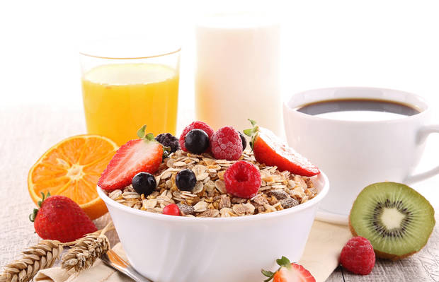
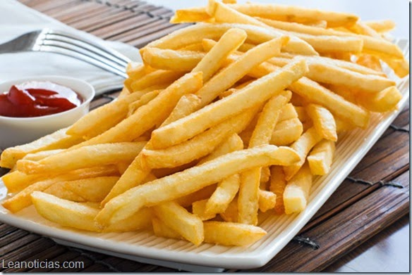

ComeSano
El blog de gastronomía que cuida tu alimentación.

Lo que no debe faltar en un desayuno saludable
12 de julio de 2017
Todos sabemos y hemos escuchado a alguien decir más de una vez que el desayuno es la comida más importante del día. Muchas veces las personas pasan por alto lo que deben comer o simplemente se saltan el desayuno, lo cual no es muy bueno. Es por esto que decidimos explicarles aquí en ComeSano lo que no debe faltar en un desayuno saludable.
Primero lo primero, hidratos de carbono, lo que nos aporta energía inmediata. Muchos piensan que el pan engorda, lo cual depende de la cantidad que se consume o con qué se acompañe. Recomendamos una rebanada de pan de centeno o galletas de arroz. Otra cosa que no debe faltar son proteínas, las que podemos conseguir con una pechuga de pavo o pollo, jamón serrano, queso fresco o huevos cocidos. Otra cosa son vitaminas y minerales, que podemos encontrar en frutas como el plátano, la naranja, piña, kiwi. Otra cosa es una bebida caliente como café o té para acelerar el metabolismo. Por último, ácidos grasos esenciales que podemos encontrar en el aceite de oliva.
Escribe un comentario:
Publicar
Es cierto. Fui al nutricionista y me dijo que debía incluir todo en mi desayuno. Gran artículo.
Entérate cómo hacer unas papas fritas más saludables
11 de julio de 2017
En el último tiempo, han salido estudios de la OMS que las papas fritas son perjudiciales para la salud, esto es debido a que son fritas con aceite de mala calidad, lo cual hace que los niveles de colesterol se eleven más, lo que sería perjudicial para el corazón. Con esto, aumentan los índices de muerte prematura. Sin embargo, sabemos que las papas fritas es uno de los alimentos preferidos para comer como snacks o para acompañar un buen almuerzo. Es debido a esto que expertos han dicho que una forma de comerlas es no freírlas en aceite, sino hacerlas al horno.
Es así como aquí en ComeSano te enseñamos una rica y saludable forma de hacer papas fritas al horno y sin aceite. Bueno, se usará aceite, pero es aceite de oliva, el cual servirá para sazonar y así las papas no se peguen al llevarlas al horno. Lo primero es pelar y cortar papas. Luego, remojarlas en agua por unos 15 minutos para que así queden más crocantes, aunque si te gustan muy crocantes, las puedes remojar en agua con hielo. Posteriormente, las secas y las remueves con aceite de oliva. Luego, pones papel mantequilla en la lata del horno y distribuyes ordenadamente las papas para que no se peguen y dejas cocinar unos cuantos minutos. Luego, las sacas del horno y ¡a disfrutar!
Escribe un comentario:
Publicar
Excelente consejo para los que queremos bajar de peso.

De hecho no son para bajar de peso, es para evitar problemas cardiovasculares por el alto contenido en colesterol, pero es un gran aporte.